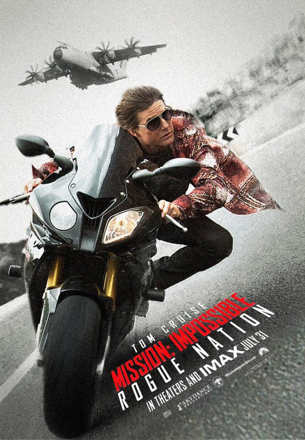
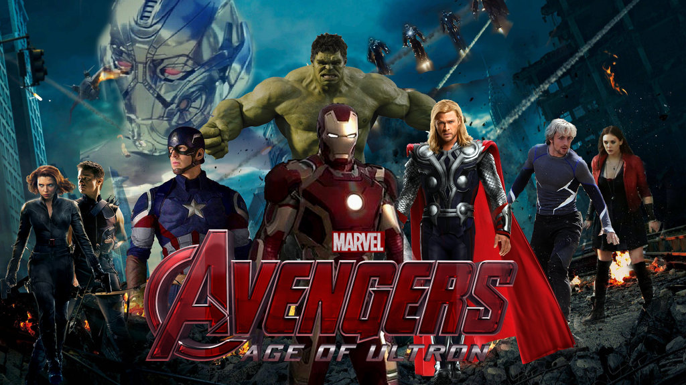

Mission Impossible 5
"Mission Impossible 5" mengisahkan tentang revolves around Ethan Hunt dan IMF team menjalani suatu misi yang sangat konyol, dimana paling tidak mungkin yang belum pernah mereka lakukan sebelumnya. Misi tersebut adalah memberantas suatu sindikat. Sebuah organisasi Internasional yang jahat yang juga memiliki ketrampilan sama seperti mereka, telah berkomitmen untuk dapat menghancurkan IMF. Ethan Hunt salah satu agen efektif Impossible Mission Force (IMF), yang ternyata IMF sendiri telah dibubarkan oleh dendam kepala birokrat Washington CIA ( Alec Baldwin).

FAST FARIOUS 7
SINOPSIS: Furious 7 atau sebelumnya dikenal sebagai Fast & Furious 7 adalah sebuah film aksi, laga dan balap mobil Amerika Serikat. Furious 7 merupakan film ketujuh dari serial Fast & Furious. Film ini akan mengupas 'pensiunnya' Brian O'Conner dari dunia balap, sebagaimana diketahui, karena pemeran Brian, Paul Walker, telah meninggal dunia. Film ini dirilis di AS pada tanggal 03 April2015.
